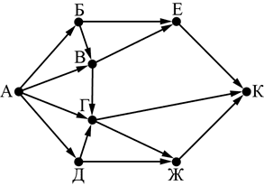

Информатика ОГЭ 2025 года содержит 16 заданий, то есть работа состоит из двух частей. Первая часть содержит 10 заданий с краткими ответами, во второй части 6 заданий, которые необходимо выполнить на компьютере.
С 1 по 12 ответы необходимо перенести на БЛАНК ОТВЕТОВ № 1.
C 13 по 16 необходимо выполнить на компьютере, результатами выполнения заданий являются отдельные файлы. Имя файла которого сохранили необходимо перенести на БЛАНК ОТВЕТОВ № 2.
| Номер задания | Максимальный балл |
| № 1-12 | 1 |
| № 13 | 2 |
| № 14 | 3 |
| № 15 | 2 |
| № 16 | 2 |
| Баллы | Оценка |
| 0-4 | 2 |
| 5-10 | 3 |
| 11-15 | 4 |
| 16-21 | 5 |
1. В кодировке Windows-1251 каждый символ кодируется 8 битами. Вова хотел написать текст (в нём нет лишних пробелов):
«Ом, Бор, Кюри, Попов, Джоуль, Рентген, Курчатов, Резерфорд – великие физики».
Фамилию одного учёного ученик написал два раза подряд, добавив необходимые запятую и пробел. При этом размер написанного предложения в данной кодировке оказался на 8 байт больше, чем размер нужного предложения. Напишите в ответе слово, использованное дважды.
2. От разведчика была получена следующая шифрованная радиограмма, переданная с использованием азбуки Морзе.
• – – – • • – – • • • • • – – •
При передаче радиограммы было потеряно разбиение на буквы, но известно, что в радиограмме использовались только следующие буквы.
| М | Н | С | У | А |
| – – | – • | • • • | • • – | • – |
Определите текст радиограммы. В ответе запишите получившееся слово (набор букв).
3. Напишите натуральное число x, для которого ложно высказывание:
(x < 4) ИЛИ НЕ (x < 5)
4. Между населёнными пунктами A, B, C, D, E, F построены дороги, протяжённость которых (в километрах) приведена в таблице.
| A | B | C | D | E | F | |
| A | 2 | 5 | 15 | |||
| B | 2 | 2 | ||||
| C | 5 | 2 | 1 | 3 | ||
| D | 1 | 6 | ||||
| E | 3 | 4 | ||||
| F | 15 | 6 | 4 |
Определите длину кратчайшего пути между пунктами A и F. Передвигаться можно только по дорогам, указанным в таблице.
5. У исполнителя Делитель две команды, которым присвоены номера:
1. раздели на 2
2. прибавь 1
Первая из них уменьшает число на экране в 2 раза, вторая увеличивает его на 1. Исполнитель работает только с натуральными числами. Составьте алгоритм получения из числа 89 числа 24, содержащий не более 5 команд. В ответе запишите только номера команд.
(Например, 21121 – это алгоритм:
прибавь 1
раздели на 2
раздели на 2
прибавь 1
раздели на 2,
который преобразует число 75 в 10.)
Если таких алгоритмов более одного, то запишите любой из них.
6. Ниже приведена программа, записанная на пяти языках программирования.
| Бейсик | Паскаль | Алгоритмический язык |
|
DIM k, s AS INTEGER INPUT s INPUT k IF s \ 2 = k THEN PRINT "ДА" ELSE PRINT "НЕТ" END IF |
var s, k: integer; begin readln(s); readln(k); if s div 2 = k then writeln ('ДА') else writeln ('НЕТ') end. |
алг нач цел s, k ввод s ввод k если div(s, 2) = k то вывод "ДА" иначе вывод "НЕТ" все кон |
| С++ | Python | |
| #include using namespace std; int main() { int s, k; cin >> s; cin >> k; if (s / 2 == k) cout << "ДА" ; else cout << "НЕТ" ; return 0;} |
s = int(input()) k = int(input()) if s // 2 == k: print("ДА") else: print("НЕТ") |
|
Было проведено 9 запусков программы, при которых в качестве значений переменных s и k вводились следующие пары чисел:
(1, 1); (8, 4); (14, 10); (20, 1); (7, 3); (10, 5); (10, 2); (4, 1); (1, 0).
Сколько было запусков, при которых программа напечатала «ДА»?
7. Доступ к файлу ftp.jpg, находящемуся на сервере text.net, осуществляется по протоколу ftp. Фрагменты адреса файла закодированы цифрами от 1 до 7. Запишите последовательность этих цифр, кодирующую адрес указанного файла в сети Интернет.
1) .net
2) jpg
3) ftp.
4) //
5) ftp:
6) /
7) text
8. В языке запросов поискового сервера для обозначения логической операции «ИЛИ» используется символ «|», а для логической операции «И» – символ «&».В таблице приведены запросы и количество найденных по ним страниц некоторого сегмента сети Интернет.
| Запрос | Найдено страниц (в тысячах) |
| Пшеница | Овёс | 6400 |
| Пшеница & Овёс | 550 |
| Пшеница | 4300 |
Какое количество страниц (в тысячах) будет найдено по запросу Овёс?
Считается, что все запросы выполнялись практически одновременно, так что набор страниц, содержащих все искомые слова, не изменялся за время выполнения запросов.
9. На рисунке – схема дорог, связывающих города А, Б, В, Г, Д, Е, Ж и К. По каждой дороге можно двигаться только в одном направлении, указанном стрелкой. Сколько существует различных путей из города А в город К?

10. Переведите число 105 из десятичной системы счисления в двоичную систему счисления. Сколько единиц содержит полученное число? В ответе укажите одно число – количество единиц.
11. В одном из произведений И.А. Гончарова, текст которого приведён в подкаталоге каталога Проза, присутствует эпизод, в котором персонаж по фамилии Волков не рекомендует посещать некую семью, ссылаясь на то, что там говорят только об искусстве. С помощью поисковых средств операционной системы и текстового редактора определите фамилию главы этой семьи.
 Скачать файл
Скачать файл12. Сколько файлов объёмом менее 3 Мб каждый содержится в подкаталогах каталога DEMO-12? В ответе укажите только число.